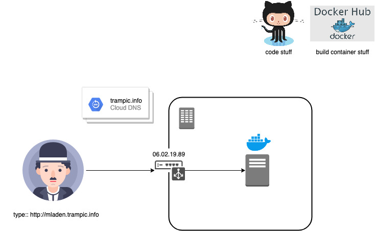
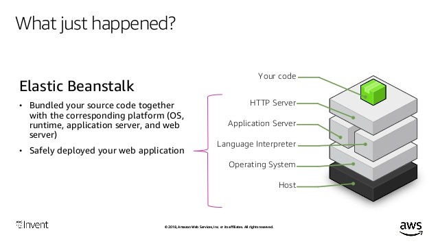

# aws-elastic-beanstalk
Here We are, thank you for your time and interest going through this repo.
<br>*https://github.com/Mladen-Trampic-SRB-1989/aws-elastic-beanstalk*
<br>We are about to make fast pass through Elastic Beanstalk and docker deployment, hope you like my way of learning and sharing in the process.
## Just me, setting up expectations right:
<p align="center">
</p>
- Who am I ?
- [Working nomad and having loads of fun in process. [ Serbia -> Italy -> Ireland -> Austria ]](http://mladen.trampic.info)
- [Proud father, husband, brother and humble son.](https://www.instagram.com/djombla/?hl=en)
<br>*In nutshell , not much free time, but many wishes and ideas.*
***
## Hence, what is the idea here ?
- Deploy Web Application ( / Service / API .. ) or migrate to cloud with minimal effort, to move towards becoming Cloud Native[1].
- Requirements:
- Fully managed service ( I want to focus on Development and code )
- No additional pricing other than running resources
- Future proof / extendable with CI/CD
- ...
***
## Ok, Cloud, Why Cloud and AWS?
| *Principle* | *Concepts* |
|--- |--- |
| Agility | Innovation <br> Speed for Experimentation / try and fail Fast |
| Elasticity | Scale on demand <br> No overhead capacity ( What you need / When you need ) <br> Regionalization : AWS now spans 69 Availability Zones within 22 geographic regions around the world. |
| Flexibility | Low to no cost to entry <br> Large portfolio of managed services / 3rd Party on Marketplace |
| Security | Shared responsibility model <br> Industry standard certificiations to achieve different compliance requirements |
- Natural habitat for DevOps and automation.
***
## Ok, what can it offer to me to achieve my requirements ?
### Magical Answer:
- [Elastic Beanstalk from AWS ?](https://docs.aws.amazon.com/elasticbeanstalk/latest/dg/Welcome.html)
<br>Hmm, Name of the service Beanstalk, reminds me on cartoon I used to love to watch when I was kid, Jack and the Beanstalk.
<br>( Although, in 90's in Serbia there were not so many :D )
- **But wait, is this my magical beanstalk to the mythical castle of work life balance promised with DevOps automation and running stuff the cloud ?**
<p align="left">
</p>
| *Principle* | *Concepts* |
|--- |--- |
| Agility | Fast to pick up <br> Easy to play around <br> time to deliver reduced <br> Integration made easy |
| Elasticity | Plug and play autoscaling / HA of your app |
| Flexibility | Pay what you run <br> Redeploy / Destroy <br> Integrate with CI/CD via API's or CLI |
| Security | Best part of it, infrastructure security is managed for me |
***
## What do I have ?
- Critical branding CV Web Page running in complex datacenter, that often forces me to have sleepless nights.
<br> This happens during hype periods, when people are visiting my page seeking for more information about me, cuasing overload to my complex local resources, meaning - downtime. This makes my reputation to sustain unrecoverable damage. :-(
<br> Error 50* - [Troubleshootng](https://www.interserver.net/tips/kb/troubleshoot-500-internal-server-error/)
<br>Meanwhile, my rep suffer @ http://mladen.trampic.info
<p align="center">

</p>
***
## How do I get to my idea ?
- Step 1 ofc get EB CLI[2]
```bash
python3 -m venv /path/to/new/virtual/environment
source elastic-beanstalk-cli/bin/activate
pip install awsebcli
eb --version
```
- Step 2 Initialize Application[3]
```bash
eb init
```
Interactive session...
```Bash
Select a default region
1) us-east-1 : US East (N. Virginia)
2) us-west-1 : US West (N. California)
3) us-west-2 : US West (Oregon)
4) eu-west-1 : EU (Ireland)
5) eu-central-1 : EU (Frankfurt)
6) ap-south-1 : Asia Pacific (Mumbai)
7) ap-southeast-1 : Asia Pacific (Singapore)
8) ap-southeast-2 : Asia Pacific (Sydney)
9) ap-northeast-1 : Asia Pacific (Tokyo)
10) ap-northeast-2 : Asia Pacific (Seoul)
11) sa-east-1 : South America (Sao Paulo)
12) cn-north-1 : China (Beijing)
13) cn-northwest-1 : China (Ningxia)
14) us-east-2 : US East (Ohio)
15) ca-central-1 : Canada (Central)
16) eu-west-2 : EU (London)
17) eu-west-3 : EU (Paris)
18) eu-north-1 : EU (Stockholm)
19) ap-east-1 : Asia Pacific (Hong Kong)
20) me-south-1 : Middle East (Bahrain)
(default is 3): 5 <b># Hey I am Europian Guy</b>
Enter Application Name
(default is "demo"): mladen-trampic-cv
Application mladen-trampic-cv has been created.
Select a platform.
1) Node.js
2) PHP
3) Python
4) Ruby
5) Tomcat
6) IIS
7) Docker
8) Multi-container Docker
9) GlassFish
10) Go
11) Java
12) Packer
13) Python (BETA)
14) Corretto (BETA)
15) Docker (BETA)
(default is 1): 15
Cannot setup CodeCommit because there is no Source Control setup, continuing with initialization
Do you want to set up SSH for your instances?
(Y/n): n
```
- Step 3 Setup my Dockerfile[4].
```bash
cat > Dockerfile << EOF
FROM mtrampic/resume
EXPOSE 80
EOF
```
- Step 4 Create
```bash
eb create
```
Interactive session...
```bash
eb create
Enter Environment Name
(default is mladen-trampic-cv-dev): dev-env #Name environment
Enter DNS CNAME prefix
(default is dev-env):
Select a load balancer type
1) classic
2) application
3) network
(default is 2): 2 # Network L7 yay
Would you like to enable Spot Fleet requests for this environment?
(y/N): N # Spot instances don't fall under free tier ...
Enter a list of one or more valid EC2 instance types separated by commas (at least two instance types are recommended).
(Defaults provided on Enter): t2.micro # Free tier ...
Creating application version archive "app-200303_062332".
Uploading mladen-trampic-cv/app-200303_062332.zip to S3. This may take a while.
Upload Complete.
Environment details for: dev-env
Application name: mladen-trampic-cv
Region: eu-central-1
Deployed Version: app-200303_062332
Environment ID: e-cihdcuasem
Platform: arn:aws:elasticbeanstalk:eu-central-1::platform/(BETA) Docker running on 64bit Amazon Linux 2/0.1.1
Tier: WebServer-Standard-1.0
CNAME: dev-env.eu-central-1.elasticbeanstalk.com
Updated: 2020-03-03 05:23:34.543000+00:00
```
- Step 5 Open
```Bash
eb open
```
- Future steps
- Reconfigure DNS Server
- Explore automation of everything, etc...
******
## So What happened in backend ?
<p align="center">

<br>* slide taken from https://www.slideshare.net/AmazonWebServices/paas-from-code-to-running-application-using-aws-elastic-beanstalk-dev323-aws-reinvent-2018/16
</p>
******
## Resources:
<br>[1] - Cloud Native : https://en.wikipedia.org/wiki/Cloud_native_computing
<br>[2] - EB CLI : https://docs.aws.amazon.com/elasticbeanstalk/latest/dg/eb-cli3-install-advanced.html
<br>[3] - EB Init : https://docs.aws.amazon.com/elasticbeanstalk/latest/dg/eb3-init.html
<br>[4] - My CV in Dockerhub : https://hub.docker.com/r/mtrampic/resume